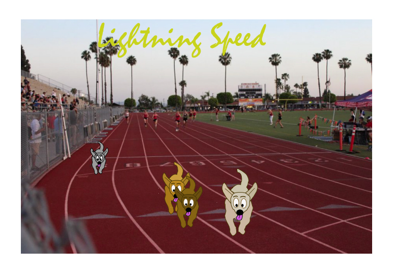

HOME photoshop illustrator flash print contact

Here is a copy of my vector assignment. I took a photo of our dog Edie running in the park and turned it into a character using Adobe Illustrator. Im thinking I might use these skills for logos in the future.